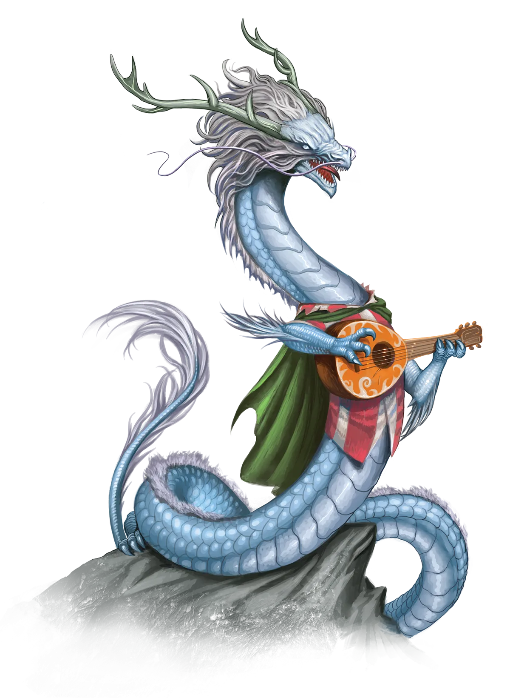

如果一项龙之馈赠有先决条件，你必须满足这些条件才能获得它。你可以在满足其先决条件的同时获得该赠礼。
某些龙之馈赠会赋予你施展法术的能力。要施展这些法术之一，你必须使用其正常的施法时间，并遵循施法的通用规则，除非另有说明。你通过龙之馈赠获得的法术，其施法关键属性为你龙类祖先可以赋予+2加值所对应的智力、感知或魅力之一；若你的龙类祖先不允许你在这三项属性值中提升任何一项，则使用魅力。你在设定法术豁免DC和进行攻击检定时，使用你的施法关键属性。
法术豁免DC = 8 + 你的熟练加值 + 你的施法关键属性调整值
法术攻击调整值 = 你的熟练加值 + 你的施法关键属性调整值
完整等级索引清单亦可查阅：龙之馈赠等级索引对照表